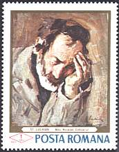
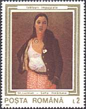
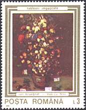

Shot Paintings
The paintings were hit by bullets in December 1989, during the popular uprising against the dictator Ceaușescu and the communist regime. The Romanian stamp issue of 15 October 1990 commemorates these damaged works of art.


On the right you can see the impact of the bullet; compare it with the stamp on the left, issued in 1968. This masterpiece by Ștefan Luchian represents Old Nicholas, the Cobza-player. The painting was subsequently restored and can be admired at the National Museum of Art.
All stamps in the set bear the inscription Tablouri împușcate (“Shot Paintings”) at the top. The set was issued on 15 October 1990. The print run of the complete set was 250,000.
Other paintings in the issue

Woman in White

Safta the Florist

Vase of Flowers

Madonna and Child
Shot, then overprinted and surcharged
About ten years after the original issue, the first five values of the set were overprinted with a new denomination of 1,700 lei, the postage for a simple letter sent within Romania.

The old face value was covered by an image of an easel, following the “tradition” of recent overprints by the Romanian postal administration. To cheer up the set, I had it cancelled in Bucharest on my birthday, 19 September 2000.
The 5-lei value was not overprinted, probably because it was out of stock. Only 250,000 examples had been printed, a small quantity compared with the print runs of 800,000 to 3,000,000 for other values of the set.
Only the upper portion of the cover is shown here. Two more stamps were affixed below to reach the total of 12,300 lei, the postage for a letter from Romania to Switzerland — a high price for the Romanian population!
Historical article by Victor Manta. The original stamp illustrations and the author's personal account have been preserved in this updated presentation.